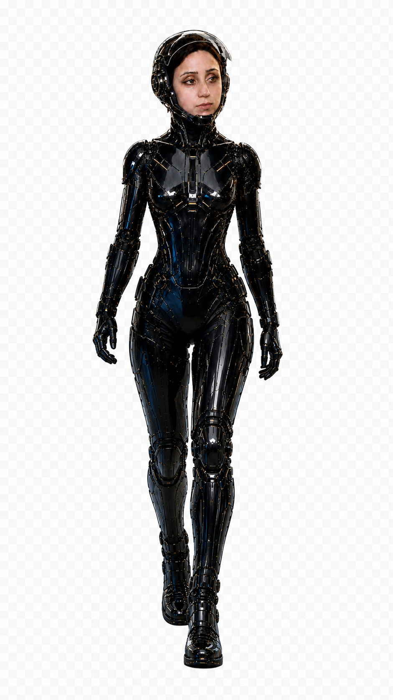

Sosyal Medya
İçerik üretimi, yönetim, kreatif kampanya.
→ BTMEDYA
TEKLİF AL ↗
BTMEDYA
TEKLİF AL ↗
BTMEDYA AJANS / YENİ NESİL MEDYA
Haber, prodüksiyon ve yapay zekâyı tek yaratıcı akışta buluşturan yeni nesil medya deneyimi.

HİZMETLERİMİZ
Kaydırdıkça hizmetler yatay olarak ilerler.
İçerik üretimi, yönetim, kreatif kampanya.
→Reklam, marka filmi ve prodüksiyon.
→İşletmelere özel AI çözümleri ve üretim.
→Modern, etkileşimli ve dönüşüm odaklı web.
→Yerel ve ulusal yayın, röportaj, haber prodüksiyonu.
→Düğün, etkinlik ve anı filmi.
→Logo, renk sistemi, sosyal medya görsel dili.
→Müzik klibi ve sosyal video içerikleri.
→Balıkesir ve çevresinden doğrulanmış saha haberleri.
Sosyal içerik, marka kimliği ve dijital üretim.
Kamera, kurgu, renk ve final master akışı.
Canlı haber akışı hazırlanıyor.
GERÇEK ÜRETİM / PORTFÖY
BTMEDYA'nın medya, prodüksiyon ve dijital üretim yüzünü tek akışta gösteren seçki.

AI LAB / SHOWREEL
Konsept, prompt ve prodüksiyon disipliniyle üretilen kısa AI video örnekleri. Reklam ve sosyal içerik referansı.
PORTFÖY / REFERANSLAR
Düğün, açılış, kurumsal tanıtım ve sokak röportajlarından seçili kareler.


YOUTUBE / PODCAST
Gündem, sektör ve şehir hikâyelerini konuk röportajlarıyla ekrana taşıyan BTMEDYA podcast serisi.
YOUTUBE'DA İZLE ↗BTMEDYA / AI LAB
AI video, AI görsel, reklam kreatifi, içerik sprintleri ve dönüşüm odaklı dijital deneyimleri gerçek prodüksiyon akışıyla birleştiren laboratuvar.
TEKLİF MİMARİSİ
İhtiyacını seç, seçtiğin hizmet kapsamını gör ve bağlamlı bir WhatsApp teklif konuşması başlat.
Henüz seçim yapılmadı.
WHATSAPP'TA TEKLİFİ BAŞLAT ↗BTMEDYA
Balıkesir merkezli haber, medya prodüksiyon ve yapay zekâ ajansı. Doğrulanmış haber üretiminden sinematik video prodüksiyonuna, AI destekli içerik üretiminden dijital medya çözümlerine kadar geniş bir yelpazede hizmet veriyoruz.
BTMEDYA HAKKINDA ↗FİKRİNİZ VAR MI?
Projenizi anlatın; hedefinize uygun medya, tasarım ve yapay zekâ çözümünü birlikte kuralım.